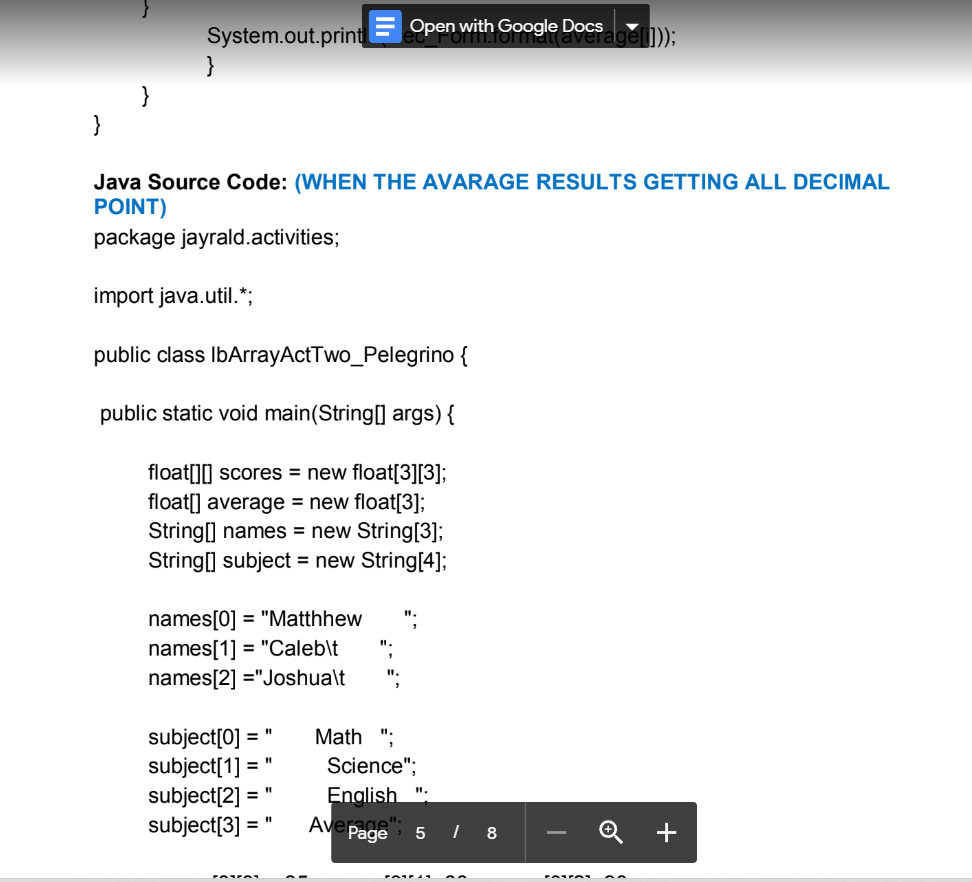
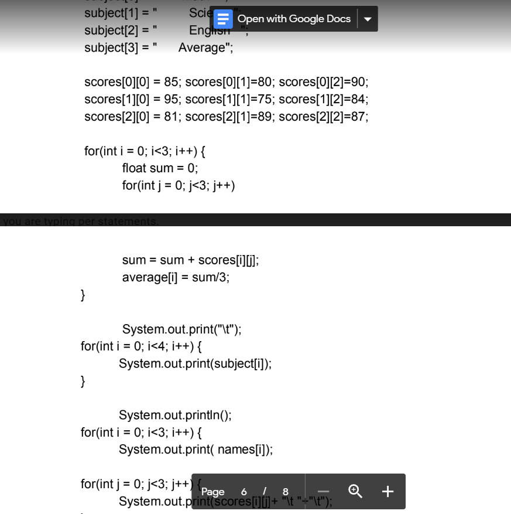
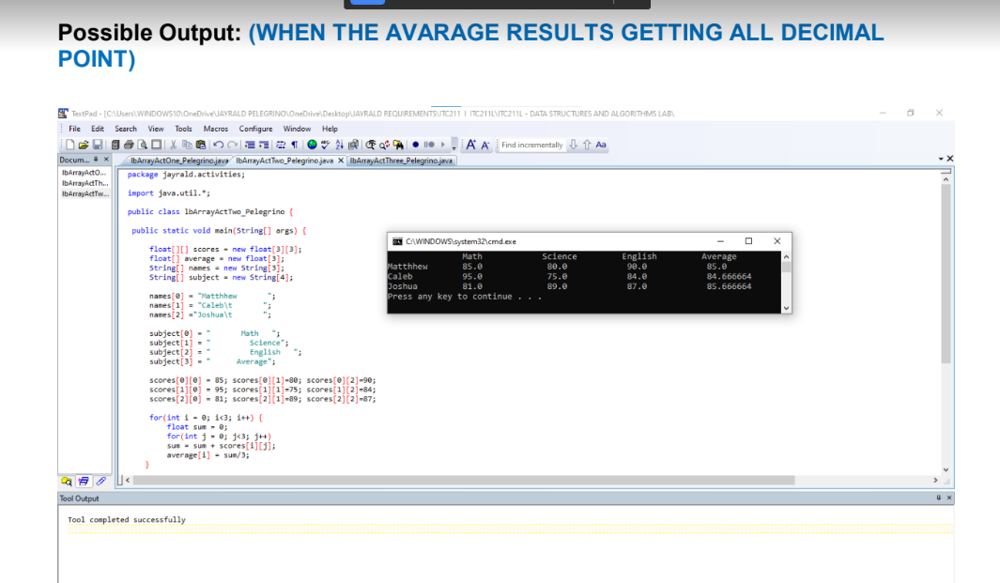
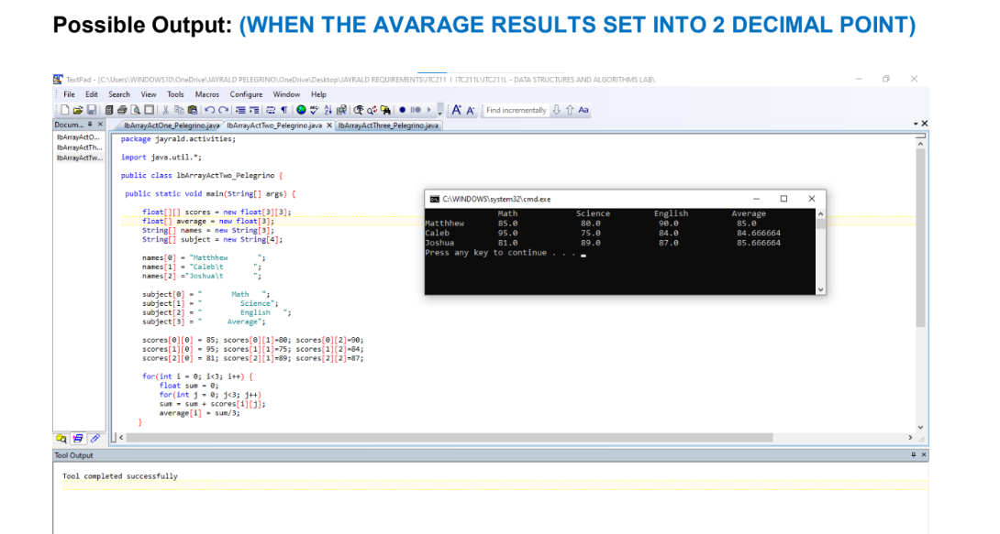
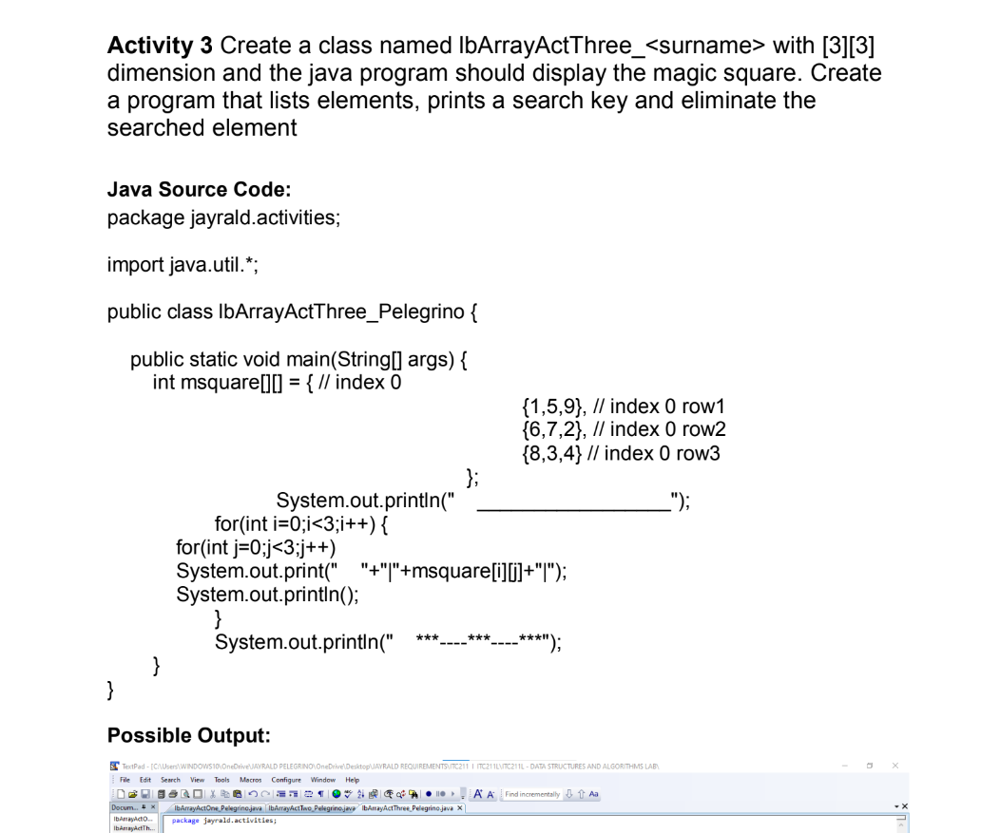
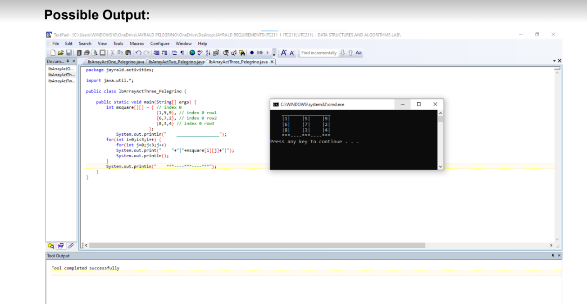

1 / 10

2 / 10

3 / 10

4 / 10

5 / 10

6 / 10

7 / 10

8 / 10

9 / 10

10 / 10

Here in this exercise, in activity 1 first here I learned to code about the javaprogram should display the elements using 3D array. even though I'm missing something, I realize what's missing, although I used it here in our array up to row 4 to indicate the output format, then here in activity 2 which is where I learned how to use array elements as students' score in tabular form then Compute and print the average score. and lastly in activity 3 here I built a magic square and I did it in the code which means is an n x n square with a whole number written inside each cell, so that the sum of the numbers in every row, in every column and in each of the main diagonals is equal. This number is called the magic number. The main diagonals are those that stretch from corner to corner.
“Don’t let what you cannot do interfere with what you can do.” – John Wooden